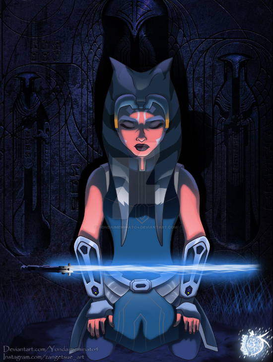

Nací en un planeta pequeño del borde exterior llamado Shili, soy de la raza Togruta y ex-aprendiz del templo jedi de Corusant, llevo estudiando la fuerza desde que tengo uso de memoria sabiendo de esta practicamente todo lo que hay que saber.
Sobre mí:
|
|

Participè como comandante en el ejercito Clon defendiendo la Republica con mi maestro Anakin y la legión de clones que comandaba; la 501th la cual era una de las mejores legiones clon a la que se puede pertenecer con soldados tan valerosos y honorables como el Capitan Rex, Cincos, Echo, Tub o Dogma. |
|
Participé en multiples batallas durante la guerra junto a compañeros y amigos, perdiendo por el camino a muchos de ellos los cuales no se merecian morir y siempre recordaré con cariño y respeto. Estube en planetas que se desmoronaban por culpa de la guerra como Geonosis, Christophsis, Ryloth, Umbara, Onderon, Coruscant, entre otros donde se perdieron muchas vidas de ambos bandos. |
Teniendo un excelente desenpeño como jedi de forma impecable, usando la fuerza para defender al devil y proteger la paz en la galaxia, hasta mi injusto juicio por una falsa acusación de asesinato lo que llevo a que abandonase la orden ya que me hicieron ver que no eran capaces de confiar en mí. |
Aficiones:
|
Me gusta mucho jugar al sabacc, es un juego de cartas muy popular en la galaxia que me permite pasarmelo bien y relajarme entre las batallas con mis amigos y compañeros de la 501th, soy muy buena en el y me permite ganar muchas partidas y sacar algo de dinero para poder subsistir ya que no estoy en la orden jedi. |
|

Me gusta mucho la meditación jedi ya que esta me permite relajarme y aclarar mis pensamientos, haciendo que así pueda estar en sincronia con el lado luminoso de la fuerza y que pueda elegir siempre la decisión correcta en cada momento ademas me permite centrarme en mi misma y darme cuenta de cuales son mis necesidades en cada momento y que he de hacer para solucionar mis problemas más apremiantes. |
Datos de interes:
- 1. Soy una de las pocas Togrutas que han estado en la Orden Jedi.
- 2. Experiencia en el manejo de la fuerza y el sable de luz.
- 3. Experiencia en el manejo de tropas, liderazgo y estrategias de combate.
- 4. Experiencia en misiones de sigilo y protección de objetivos(vivientes o mercancia).
- 5. Experiencia en misiones de rescate de condiciones inhospitas(ej: temperaturas de frio extremo).
Trayectoria en las Guerras Clon:
|
|
|
|
|
|
|
|